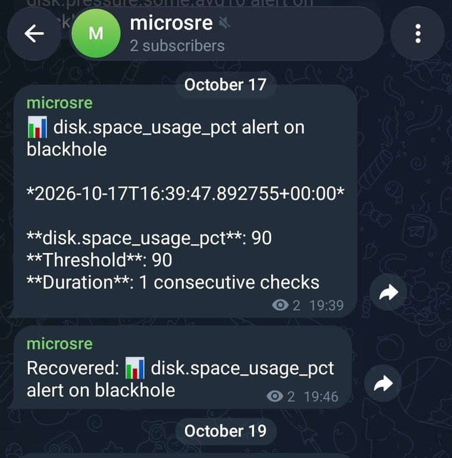

The agent is free and open source, forever.
The hosted fleet view is optional - and priced for fleets of pets, not herds of cattle.
The local agent is free and open source (MIT), forever. It's the product, not a demo: every signal, every alert, the Prometheus endpoint, heartbeat log monitoring, restart catch-up - all of it works standalone, with no account and no hosted dependency.
Alerts go direct from your machine to Slack, Discord, Telegram, or any URL that accepts a JSON POST - no microSRE server in the path. Your history is your chat, your state is a sqlite file on your machine, your data never transits us. The hosted view is an opt-in addition, not a dependency wearing a freemium hat.

Weighing microSRE against Netdata, Prometheus, healthchecks.io, or monit? There is an honest map of the options - including the parts where they win.
What hosting adds is the one thing a single host cannot do for itself: observe silence, compare across machines, and keep longer history. The dead man's switch (a machine that stops checking in pages you, and the service re-evaluates the window it missed after its own outage), the fleet view, digests, and escalation - designed so critical alerts are still delivered by your machines, never through us. No raw data and no log lines ever leave your machines; the hosted view receives metrics, your alert rules, and alert state. Details.
| Plan | Servers | Retention | Cadence | Price |
|---|---|---|---|---|
| Trial | 5 | 7 days | 60s | free, 30 days |
| Solo | 5 | 14 days | 60s | $9/mo |
| Studio | 20 | 30 days | 60s | $29/mo |
| Small org | 50 | 90 days | 60s | $59/mo |
| Beyond 50 | custom | custom | custom | per-server |
Cadence is how often a machine checks in. The hosted view accepts one tick per minute per machine - the agent's default interval, so nothing changes on your side. Faster cadence (15s) is a real cost multiplier (4x the ingest and storage churn), so it stays a custom-plan knob; if your tail is chatty, talk to us. Ticks posted faster than the plan accepts are dropped at ingest, not queued. Prices and limits are what we plan to ship; they are final when billing opens. The trial is the Solo plan with shorter retention. When it ends, pick a plan or walk away - the agent and its local alerts keep working either way.
Waitlist signups are the beta cohort: early access to the hosted view while it takes shape, free during the beta. One email when it opens, no newsletter.